classDiagram
GameModeBase <|-- LevelGameModeBase
GameModeBase <|-- MainMenuGameMode
%%namespace Gameplay {
class MainMenuGameMode
class LevelGameModeBase {
AchievementsSubsystem
WeatherSubsystem
}
class StoryGameMode {
QuestSubsystem
}
class TutorialGameMode {
TutorialSubsystem
}
class RaceGameMode
%%}
LevelGameModeBase <|-- RaceGameMode
LevelGameModeBase <|-- StoryGameMode
StoryGameMode <-- TutorialGameMode
Gameplay Framework
Con los componentes básicos comentados hasta el momento se puede implementar un juego, pero no es lo más sencillo. Por eso Unreal Engine incluye gameplay framework, prescribiendo ciertas decisiones sobre la arquitectura software y facilitando la implementación de los juegos.
GameMode y GameState
GameInstance es un buen lugar para guardar datos globales del juego, pero no es el lugar adecuado para implementar lógica específica del nivel. Para ello, Unreal Engine ofrece las clases GameMode y GameState, que son instanciados por el objeto Word al cargar un nivel y se destruyen al cargar otro.
GameMode
{{< api GameMode >}} es un actor pensando para contener el código con las reglas específicas del nivel, como por ejemplo: el número de jugadores, las condiciones para ganar, las reglas para hacer aparecer o reaparecer a los jugadores, cuándo se puede pausar la partida y qué ocurre cuando se pide, la transición a otros niveles, etc.
Note
El actor GameMode es el primer actor que recibe el evento BeginPlay() tras cargar el nivel.
La clase GameMode por defecto del proyecto se indica en las propiedades del proyecto, en Project Settings… / Project - Maps & Modes / Game Mode Override, pero se puede cambiar en cada nivel, en la propiedad World Settings / Game Mode Override, como se muestra en la Figure 1.
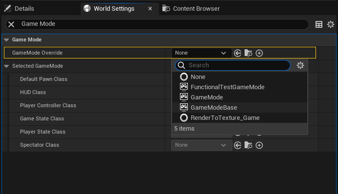
Por tanto, es posible y recomendable tener diferentes clases GameMode para cada nivel si hay diferentes modos de juego, en lugar de una única clase para todo el juego. Probablemente, heredando de una clase base común para todos los niveles, que implemente la funcionalidad común a todos ellos.
Por ejemplo, si el juego tiene un modo historia y un modo multijugador, se puede tener una clase GameMode para cada uno de ellos, que herede de una clase base que implemente la funcionalidad común a ambos. Igualmente, es común tener un nivel solo para el menú principal del juego, con su propia clase GameMode.
Tip
La clase GameMode que se incluye en Unreal Engine implementa el comportamiento esperable de un juego multijugador competitivo. Si se trabaja en otro tipo de juego, es mejor comenzar heredando de GameModeBase, que también es la clase base de GameMode.
Igual que en el caso del GameInstance, para evitar que la clase GameMode se convierta en un objeto todopoderoso, se suele dividir la funcionalidad en diferentes clases. Como GameMode es un actor, se pueden añadir ActorComponent para implementar diferentes aspectos del juego. Si no estamos interesados en los eventos de ciclo de vida de los actores y componentes –como BeginPlay() o TickComponent()– también se pueden usar clases UObject, referenciadas desde propiedades del GameMode.
Además, desde Unreal Engine 4.24, también se puede implementar subsistemas que comparten su tiempo de vida con un objeto UWorld, por lo que también son interesantes para implementar funcionalidades específicas de un nivel.
En la Figure 2 se puede ver un ejemplo de jerarquía de herencia de GameMode.
GameState
{{< api GameState >}} es un actor pensado para almacenar los datos que describen el estado de la partida, como puntuaciones, lista de jugadores, objetivos cumplidos, etc.
Sea cual sea el motor de videojuegos, separar el código del juego del estado de la partida facilita la implementación de diferentes funcionalidades:
Sincronización de los datos del juego en juegos multijugador online. En un juego multijugador online, la lógica con las reglas de la partida debe ejecutarse únicamente en el servidor para evitar las trampas. Los datos del juego también deben almacenarse en el servidor, pero al mismo tiempo es necesario mantener una copia sincronizada en cada cliente.
Mecanismo de salvado de la partida. En general, separar la lógica de los datos facilita poder almacenar estos últimos para salvar y recuperar el estado del juego (ver la ?@sec-savegame).
Lo primero es exactamente para lo que Unreal Engine usa GameState. El actor GameMode solo existe y se ejecuta en el servidor, mientras que GameState y PlayerState –del que hablaremos más adelante– contienen datos que se replican automáticamente en los clientes.
Note
Tanto GameState como PlayerState son actores porque, básicamente, es un requisito para que estos objetos sean replicados en los diferentes clientes en juegos multijugador online.
No se recomienda guardar directamente en GameState datos específicos de cada jugador –como el nombre, el nivel de salud o la puntuación específica de cada jugador– sino solo datos generales del estado del juego. Como veremos más adelante, GameState gestiona una instancia de PlayerState para cada jugador, que es donde se deben almacenar los datos específicos de cada uno. El PlayerState de cada jugador también es accesible a través de su controlador del personaje.
Separación de responsabilidades entre GameInstance y GameMode
La separación entre GameMode y GameInstance permite tener diferentes clases GameMode con distintas reglas para cada nivel. Incluso si en todos los niveles se usa la misma clase GameMode, es común emplear un nivel solo para el menú principal del juego, de forma que la lógica del menú puede estar en su propio GameMode, separado de la lógica de los niveles jugables.
En este sentido, los GameMode hacen de game / level manager. Mientras que GameInstance sirve para preservar información entre partidas, como el número de victorias de cada equipo –por ejemplo, para enfrentamientos del tipo «el mejor de X partidas»– los inventarios, las habilidades o la configuración del juego y de los personajes.
Note
El game manager es un tipo especial de manager dedicado a llevar el flujo del juego: carga de escenas y transiciones, activación de modos de menús y pausa, etc. Puede usarse para guardar referencias a otros componentes a los que se necesita acceder globalmente, evitando tener que buscar entre todas las entidades del juego cada vez que los necesitamos. En juegos relativamente grandes, el game manager se usa para implementar aspectos globales del juego, mientras que para la lógica específica de un nivel, cada nivel suele tener su level manager.
En juegos multijugador online hay un GameInstance independiente en el servidor y en cada cliente. Como no se sincroniza la información entre ellos –puesto que el GameInstance no es un actor sino un UObject– puede ser necesario copiar en el servidor parte de la información de GameInstance a GameState o PlayerState –según corresponda– al cargar un nuevo nivel para que esté disponible en los clientes.
GameMode como configurador de la partida
GameMode incluye de serie propiedades a través de las que podemos configurar diferentes características del nivel, como por ejemplo: el nombre por defecto de los jugadores o si el nivel es pausable (ver la ?@sec-pause).
Como se puede observar en la Figure 3, entre las propiedades que trae GameMode por defecto están otras clases de actores del gameplay framework que se van a instanciar para implementar diferentes aspectos del juego:
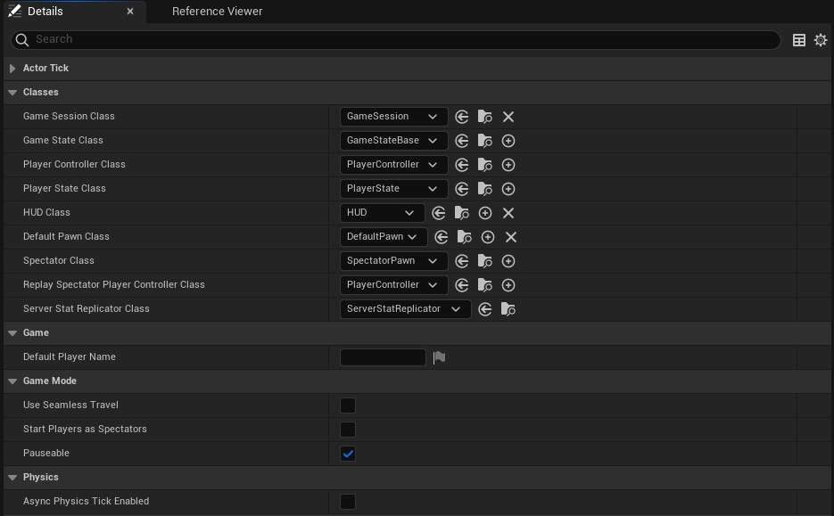
Game State Class. Clase del actor que almacena el estado de la partida. Es instanciada por el GameMode al cargarse el nivel.
Default Pawn Class. Clase por defecto del actor del personaje del jugador.
Spectator Class. Clase por defecto del actor del personaje de un espectador. Los jugadores permanecen como espectadores al iniciarse la partida si la propiedad Start Players As Spectators de Game Mode está activada.
Player Controller Class. Clase actor del controlador del personaje del jugador. Es instanciada por el GameMode en el método
Login(), al unirse un jugador a la partida.Player State Class. Clase del actor que guardará los datos específicos de cada jugador. Es instanciada por el PlayerController durante su inicialización.
HUD Class. Clase de la interfaz del juego. Esta propiedad no suele usarse actualmente, dado que las interfaces de usuario suele implementarse mediante widgets UMG (Unreal Motion Graphics).
Obviamente, nada impide que añadamos otras propiedades específicas de cada nivel.
Controladores
En Unreal Engine Gameplay Framework, se llama Controller al actor responsable de controlar al actor del personaje. Es decir, el personaje y su controlador son actores diferentes, mientras que en Unity es común que el controlador sea un componente del GameObject del personaje.
El gameplay framework incluye dos clases que heredan de {{< api Controller >}}:
{{< api PlayerController >}}. Actor que controla el personaje según las órdenes del jugador. Es decir, que es el responsable del leer la entrada del jugador y cambia el estado del personaje en base a ella.
{{< api AIController >}}. Actor que implementa el control de un personaje cuando proviene de una IA. Es decir, este controlador resulta útil para implementar personajes no jugadores (PNJ).
En la terminología de Unreal Engine, se dice que cuando un Controller comienza a controlar a otro actor, es que lo «posee». Sin embargo, esto no significa que el Controller sea el propietario del actor, sino que es el responsable de dirigirlo temporalmente, de forma que durante el juego, un mismo controlador puede cambiar el personaje que controla.
Note
Por ejemplo, en algunos RPG el jugador pueda controlar a varios personajes durante la partida, pudiendo cambiar entre ellos en cualquier momento. Mientras que en otros juego el jugador suele controlar a un personaje humano, pero en determinados momentos puede subir el personaje a un vehículo y controlarlo para desplazarse con él.
Posesión de actores
Para que un actor pueda ser poseído por un Controller debe heredar de la clase de actor {{< api Pawn >}}, que ofrece una interfaz mínima común para ser controlado.
Para poseerlo se usa el método {{< api Possess >}} del {{< api Controller >}}, indicando el Pawn que se quiere controlar. Mientras que para desposeerlo se usa el método {{< api UnPossess >}}.
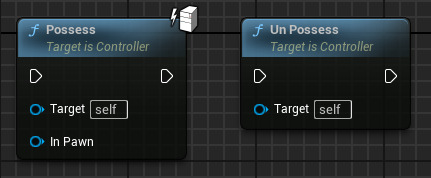
Si un Controller posee a un Pawn que ya estaba siendo controlado por otro Controller, este último deja de controlarlo y pasa a ser controlado por el nuevo Controller. Igualmente, si un Controller ya posee a un Pawn y se le indica que posea a otro, deja de controlar al primero y pasa a controlar al segundo.
En todos los casos tanto el Controller como el Pawn son notificados. El {{< api Controller >}} recibe los eventos {{< api OnPossess >}} o {{< api OnUnPossess >}} y el {{< api Pawn >}} recibe los eventos {{< api Possessed >}} o {{< api UnPossessed >}}.
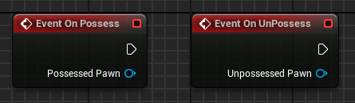
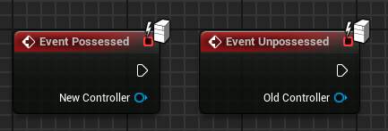
Estos eventos son útiles. Por ejemplo, si un personaje está poseído por un AIController y el jugador lo posee, el AIController dejará de controlar al personaje. Si más tarde el jugador posee aún personaje diferente, el AIController no volverá a controlar al primer personaje, automáticamente. Por tanto, se puede usar los eventos indicados para hacer que el AIController vuelva a controlar al primer personaje cuando el jugador deje de controlarlo.
Además de usar los métodos Possess() y UnPossess(), los Pawn se puede configurar para que sean poseídos automáticamente por un Controller cuando son instanciados y comienza su ejecución en el nivel, como se puede ver en la Figure 4:
Si un Pawn se configura con la propiedad Auto Possess Player, es poseído automática por el PlayerController del jugador indicado, al ser instanciado.
Si un Pawn se configura con la propiedad Auto Possess AI, es poseído automática por el AIController indicado.
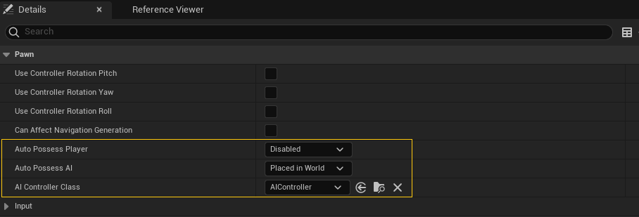
Control de actores
Una vez el Controller posee un Pawn puede controlarlo a través de sus métodos, pero debemos tener en cuenta que por defecto las opciones se limitan a mover y rotar el actor.
Para que el Controller pueda indicar acciones adicionales al Pawn –como atacar, salta, escalar o defenderse– es necesario implementar una interfaz que exponga dichas acciones en el Pawn y que el Controller pueda llamar.
Por ejemplo, en la Figure 5 se ilustra un posible caso dónde nuestro MyPlayerController –que hereda de PlayerController para añadirle funcionalidades adicionales, como la lectura de las acciones del jugador– posee al actor para el personaje del jugador MyPlayerPawn
classDiagram
%%ÁÁÁ Fix for an encoding problem
class Pawn {
+AddMovementInput()
}
class MyPlayerPawnInterface {
<<interface>>
+Attack()
+Crouch()
+Fire()
+Jump()
}
Pawn <|-- MyPlayerPawn
MyPlayerPawnInterface <|.. MyPlayerPawn
PlayerController <|-- MyPlayerController
MyPlayerController ..> Pawn: posee
MyPlayerController ..> MyPlayerPawnInterface: usa
Este Pawn es teledirigido por el controlador. Puede dirigir su movimiento usando el método {{< api AddMovementInput >}} (ver la Figure 6) de la clase Pawn o indicar otras acciones utilizando la implementación en MyPlayerPawn de la interfaz MyPlayerPawnInterface que contiene acciones del personaje especificas para este juego.
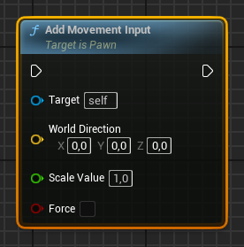
AddMovementInput() de Pawn.
Movimiento del actor
Un Controller puede mover un Pawn directamente llamando a métodos como SetActorLocation() o AddActorWorldOffset(), que tienen todos los actores.
Sin embargo, lo más habitual es que el Controller indique al Pawn que se mueva en una dirección, para lo que puede usar al método {{< api AddMovementInput >}} de Pawn.
En la Figure 7 se puede observar como se lee la acción de entrada Move, para luego llamar a AddMovementInput con sus valores para actualizar el movimiento del Pawn. En este ejemplo la lectura de la acción se hace desde el propio Pawn, no desde el Controller.
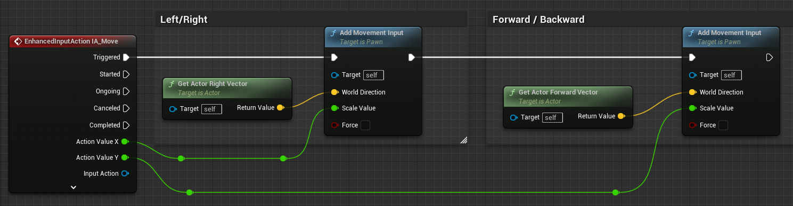
La clase Pawn acumula las direcciones indicadas a través AddMovementInput() en una variable interna de tipo vector, llamada ControlInputVector. Cómo se debe interpretar este vector –si es un desplazamiento, una velocidad o una aceleración– dependen de la implementación de la lógica de movimiento.
Por defecto, la clase Pawn no hace nada con este vector, pero la idea es que en cada tick se lea el valor acumulado en ControlInputVector, usando el método ConsumeMovementInputVector(), y este valor se use para mover el personaje. Al usar ConsumeMovementInputVector(), el valor de ControlInputVector se pone a \((0, 0, 0)\), preparado para el siguiente frame.
Lo ideal no es implementar la lógica de movimiento directamente en el método Tick() del Pawn, sino en un componente {{< api MovementComponent >}} que luego se añade al actor Pawn. Es en el método TickComponent() de este componente de movimiento del actor, donde se llama a ConsumeMovementInputVector() y se usa el valor devuelto para mover el Pawn, de la forma que corresponda, como se ilustra en el diagrama de secuencia de la Figure 8.
sequenceDiagram
participant Engine
participant PlayerController
participant Pawn
participant MovementComponent
activate PlayerController
PlayerController ->> Pawn: AddMovementInput
note over Pawn: Acumular en ControlInputVector
deactivate PlayerController
Engine ->> MovementComponent: Tick
activate MovementComponent
MovementComponent ->> Pawn: ConsumeMovementInputVector()
MovementComponent ->> Pawn: AddActorWorldOffset(FinalOffset, Sweep=true, ...)
note over MovementComponent, Pawn: Mover el personaje
deactivate MovementComponent
Por ejemplo, todo actor {{< api Character >}} –que es una clase derivada de Pawn– tiene por defecto un {{< api CharacterMovementComponent >}} que se hace cargo del movimiento del personaje. Este componente deriva de {{< api PawnMovementComponent >}} que, a su vez, deriva de MovementComponent.
Realmente, si un actor Pawn detecta que se le ha añadido un PawnMovementComponent, su método AddMovementInput –que es llamado por el Controller– no acumula el vector de movimiento en ControlInputVector directamente, sino que se lo entrega al PawnMovementComponent, a través del método {{< api AddInputVector >}}.
Entonces, el componente puede decidir qué hacer con el vector de movimiento. Por defecto, se lo devuelve al Pawn sin cambios, para que lo acumule en ControlInputVector, pero siempre podemos sobrescribir la función AddInputVector para cambiar este comportamiento.
Luego, en cada tick, el MovementComponent consume el valor acumulado en ControlInputVector mediante ConsumeMovementInputVector() y desplaza al actor como corresponda.
En la Figure 9 se puede ver un diagrama de secuencia para los actores de la clase Character.
sequenceDiagram
participant Engine
participant PlayerController
participant Character
participant CharacterMovementComponent
activate PlayerController
PlayerController ->> Character: AddMovementInput
Character ->> CharacterMovementComponent: AddInputVector
CharacterMovementComponent ->> Character: Internal_AddMovementInput
note over CharacterMovementComponent, Character: Acumular en ControlInputVector
deactivate PlayerController
Engine ->> CharacterMovementComponent: Tick
activate CharacterMovementComponent
CharacterMovementComponent ->> Character: ConsumeMovementInputVector()
CharacterMovementComponent ->> Character: AddActorWorldOffset(FinalOffset, Sweep=true, ...)
note over CharacterMovementComponent, Character: Mover el personaje
deactivate CharacterMovementComponent
Unreal Engine proporciona diferentes MovementComponent para implementar diferentes tipos de movimiento, como por ejemplo: {{< api FloatingPawnMovement >}}, {{< api ProjectileMovementComponent >}}, {{< api RotatingMovementComponent >}}, {{< api InterpToMovementComponent >}} o {{< api CharacterMovementComponent >}} (ver la Section 1.7).
De estos, solo FloatingPawnMovement y CharacterMovementComponent heredan de PawnMovementComponent, por lo que interactúan con el actor Pawn de la forma comentada, intepretando el ControlInputVector como un vector de aceleración. El resto sirve para mover un actor de otras maneras.
Obviamente, siempre podemos crear nuestros propios MovementComponent para implementar el tipo de movimiento que necesitemos, tanto para Pawn –preferentemente heredando de PawnMovementComponent– como para cualquier otro tipo de actor. En ese caso, tenemos que decidir cómo interpretar ControlInputVector y cómo tratar, si fuera necesario, las diferencias entre los valores que pueden llegar según el dispositivo de control utilizado por el jugador, a través de AddMovementInput(). Por ejemplo, tenemos que considerar que tanto con teclados como con gamepads, los vectores devueltos por las Input Action correspondientes tienen magnitudes entre 1.0 y -1.0, pero el ratón u otros dispositivos puede devolver valores en un rango mayor. Por eso, el CharacterMovementComponent recorta el valor de movimiento leido a 1.0 y luego lo multiplica por la aceleración máxima de movimiento del personaje, para obtener la aceleración deseada.
Acceleration = MaxAcceleration * ClampToMaxSize(ControlInputVector, MaxSize=1.0f)Rotación de control
En ControlInputVector el Pawn se almacena la dirección en la que el Controller quiere que se mueva el personaje, pero a veces puede interesar tener otra dirección con la que indicar hacia donde debe mirar el personaje o la cámara del jugador.
Por ejemplo, en algunos juegos un personaje se puede mover en una dirección diferente a aquella en la que mira la cámara del jugador o en la que apunta. Esto es especialmente interesante con los NPC, ya que a veces la IA necesita poder controlar hacia dónde tiene que mirar un personaje, sin moverlo del sitio.
Para ello, el Controller tiene una variable interna de tipo {{< api Rotator >}}, llamada ControlRotation, que se puede leer y establecer mediante los métodos {{< api GetControlRotation >}} y {{< api SetControlRotation >}}.
La clase {{< api PlayerController >}} derivada de Controller añade los métodos {{< api AddPitchInput >}}, {{< api AddYawInput >}} y {{< api AddRollInput >}} para acumular fácilmente ángulos de rotación en ControlRotation, en cualquiera de los 3 ángulos de Euler (ver la Figure 10).
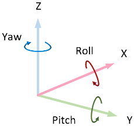
Los valores indicados al invocar estas funciones son multiplicados por las propiedades Input Pitch Scale, Input Yaw Scale y Input Roll Scale del PlayerController, antes de ser acumulados. Como en el caso del movimiento, los valores se acumulan en la variable interna RotationInput, para luego procesarla y actualizar ControlRotation convenientemente en el método Tick().
Las funciones AddPitchInput(), AddYawInput() y AddRollInput() son ideales para usarlas con los eventos de la entrada del jugador. Por ejemplo, que cuanto más acciona el jugador el stick a la derecha, más ángulo de yaw se acumule en la rotación de control.
Además, la clase Pawn también incluye tres funciones por conveniencia: {{< api AddControllerYawInput >}}, {{< api AddControllerPitchInput >}} y {{< api AddControllerRollInput >}}, que realmente llaman a las anteriores en el PlayerController.
En la Figure 11 se puede observar un ejemplo dónde se recibe la acción de entrada Look en el Pawn y se usan estas funciones para cambiar la rotación de control en el Controller.
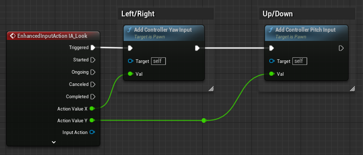
Igualmente, la clase Pawn tiene la función {{< api GetViewRotation >}}, que sirve para leer directamente la rotación de control del Controller desde el Pawn.
Gracias a que Controller y Pawn tiene una interfaz bien definida para gestionar la rotación de control, tanto la clase Pawm como muchos componentes pensados para ser utilizados en un Pawn –como CameraComponent o SpringArmComponent– vienen preparados para leer la rotación de control y usarla.
Por ejemplo, en la Figure 12 se pueden ver las opciones de configuración de la rotación de control en la clase Pawn, que pemite sincronizar automáticamente la rotación del Pawn con la rotación de control en su controlador. Mientras que en la Figure 13 se pueden observar una opción similar en el componente de cámara CameraComponent.
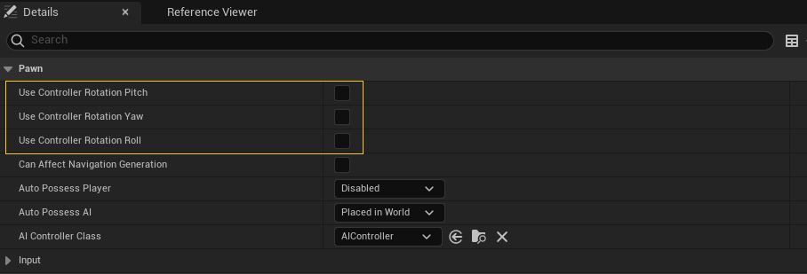
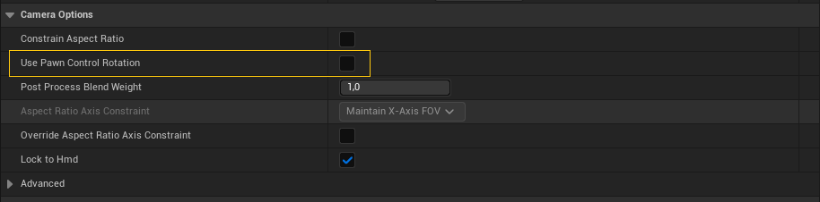
Punto de vista del jugador
Relacionado con la rotación de control, la clase Controller también maneja los conceptos de punto de vista –o POV, del inglés point of view– del jugador y de view target.
El view target se obtiene mediante el método {{< api GetViewTarget >}} de Controller y devuelve el actor «al que mira el controlador». Por lo general, se trata del Pawn poseído por el controlador, pero el PlayerController permite cambiarlo mediante el método {{< api SetViewTarget >}} y lo usa para determinar el POV de la cámara del jugador (ver la Section 1.8).
El POV del jugador se obtiene mediante el método {{< api short Controller::GetPlayerViewPoint >}} de Controller, pero significa cosas diferentes en función del tipo de controlador.
En el AIController devuelve el punto de vista del Pawn desde la altura de sus «ojos». Para ello llama a GetActorEyesViewPoint() en el Pawn y devuelve el resultado.
El método {{< api GetActorEyesViewPoint >}} de Pawn devuelve el POV en la posición del Pawn en el mundo, pero desplazado en el eje Z la cantidad indicada en la propiedad Base Eye Height del Pawn. Para la dirección del POV, considera la rotación de control del Controller que lo posee, si está poseído, o la rotación del propio Pawn, si no lo está.
En el PlayerController, {{< api short PlayerController::GetPlayerViewPoint >}} devuelve el POV de la cámara calculado por el actor {{< api PlayerCameraManager >}}, en caso de que el PlayerController tenga una referencia a un actor de este tipo. En otro caso, si el controlador tiene un configurado un actor view target, devuelve la rotación y localización de dicho actor. Finalmente, si no tiene un view target, sigue las mismas reglas que el AIController para calcular el punto de vista del Pawn desde la supuesta altura de sus ojos.
Gestión de la entrada del jugador (PlayerController)
Como hemos comentado, el {{< api PlayerController >}} es el Controller responsable del leer la entrada del jugador y cambia el estado del personaje en base a ella.
En este apartado veremos los componentes del gameplay framework que se encargan de gestionar la entrada del jugador y cómo se relacionan con el PlayerController.
Sistema de entrada legacy vs. enhanced
En Unreal Engine 4 se usaba un sistema donde la entrada de los controles de los dispositivos del jugador se mapeaba en acciones configurando las opciones en Project Settings / Input (ver la Figure 14). El código de gameplay de nuestro juego podía leer estas acciones, principalmente, a través de la clase InputComponent.
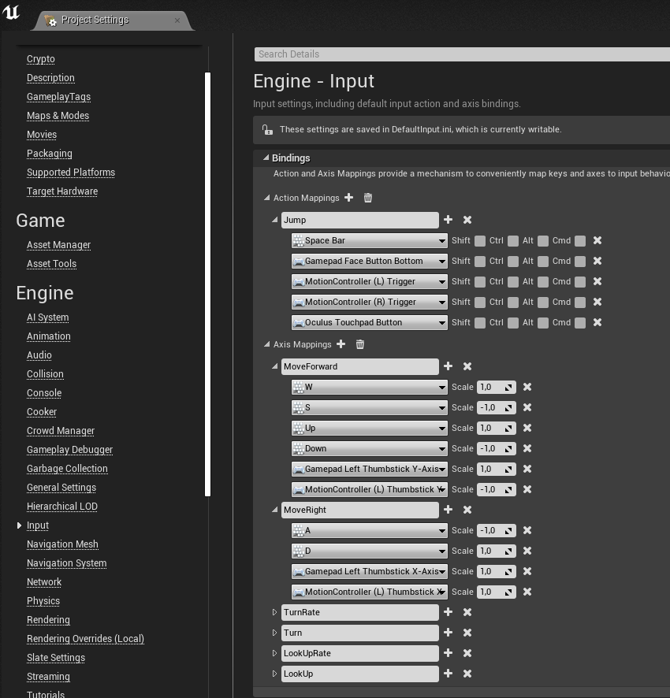
En Unreal Engine 5 este sistema pasó a considerase legacy, para ser sustituido por un nuevo sistema llamado Enhanced Input.
El Enhanced Input ofrece un montón de características nuevas. Entre otras diferencias, en el nuevo sistema las acciones de entrada se definen mediante assets de tipo Input Action, mientras que el mapeo de estas acciones a controles se define en assets Input Mapping Context. Esto facilita migrar la configuración de la entrada de un proyecto a otro, así como activar distintos mapeos de entrada en función del estado del juego.
Además, las Input Action soporta diferentes condiciones para notificar la acción de entrada al código de gameplay. Por ejemplo, se puede condicionar la activación de la acción a que el control se mantenga accionado cierto tiempo o a que el jugador accione cierta combinación de controles en un periodo de tiempo determinado –lo que se llama, un combo–. Esta funcionalidad permite ahorrar tiempo, ya que nos evita tener que implementar nosotros mismos el procesado de este tipo de entradas.
En cualquier caso, el código de gameplay puede recibir estas acciones de entrada a través de la clase EnhancedInputComponent.
El antiguo sistema sigue siendo el usado por defecto en los proyectos nuevos de Unreal Engine 5.0 aunque, en cualquier momento, se puede activar el nuevo en Project Settings / Input. Pero desde Unreal Engine 5.1 la situación es a la inversa. El Enhanced Input viene activado por defecto, pudiendo volver al antiguo en la configuración del proyecto, si es realmente necesario.
Para los temas de entrada e interacción que veremos a continuación, en general, no importa que sistema estemos usando. Ambos permite definir acciones que se disparan cuando el jugador las acciona los controles configurados para ellas. Lo único que tiene que hacer el código de gameplay es «atender» a dichos eventos.
A continuación vamos a referirnos a PlayerInput y a InputComponent por economía del lenguaje, pero debemos recordar que, si estamos usando el Enhanced Input, realmente estaríamos hablando de las clases EnhancedPlayerInput y EnhancedInputComponent.
PlayerInput
La instancia de GameViewportClient captura los eventos de entrada del jugador, localiza el controlador del jugador PlayerController que debe recibirlos –a través del objeto LocalPlayer correspondiente– y se los entrega.
Note
En juegos multijugador local se pueden crear nuevos jugadores y asignarles un dispositivo de entrada usando el nodo Create Local Player, en Blueprint, o la función {{< api CreatePlayer >}}. De esta forma, cuando llegan los eventos de entrada el motor sabe a qué jugador corresponde y puede localizar su PlayerController.
El PlayerController entrega los eventos a su objeto PlayerInput, que tiene la responsabilidad de mapear los controles de los dispositivos del jugador en acciones de entrada.
Es posible suscribirse a los eventos de PlayerInput para recibir notificaciones cuando se acciona una acción de entrada, pero lo más habitual es hacerlo a través del InputComponent.
InputComponent
El {{< api InputComponent >}} es el componente que generalmente usan los actores para acceder a la entrada del jugador. Es decir, lo podemos usar en el actor del PlayerController para controlar el personaje, pero también en el actor de una puerta o de un objeto recogible, para recibir la acción del jugador cuando quiera abrir la puerta o recoger el objeto en cuestión.
Con InputComponent podemos conectar el código de gameplay del actor a las acciones de entrada definidas en el juego. Esto se puede hacer usando eventos, para que el InputComponent ejecute nuestro código cuando llegue cierta entrada del jugador, como se puede observar en la Figure 15 (a).
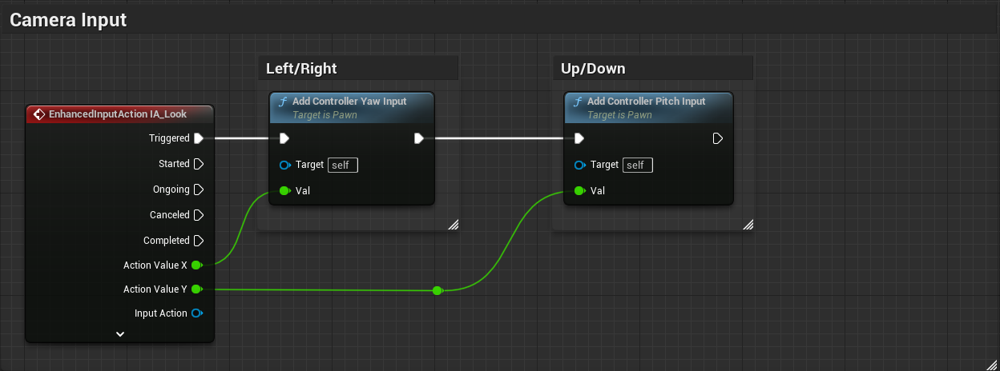
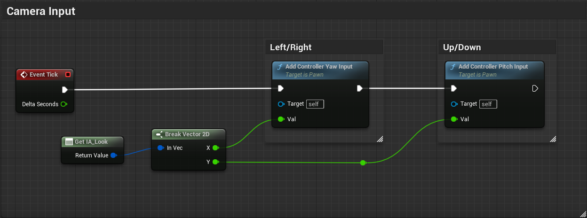
Sin embargo, si vamos a hacer algún tipo de cálculo combinando los valores de varias acciones de entrada, puede resultar más cómodo leer dichos valores cuando nos haga falta, como se observa en la Figure 15 (b).
Aunque no veamos a InputComponent en el editor, todos los actores tienen una instancia de ese componente, porque cualquier actor en la escena puede acceder a la entrada del jugador.
Quien conecta el PlayerInput –que es quién tiene acceso a las acciones de la entrada– con los InputComponent de los actores es el PlayerController.
PlayerController
En la arquitectura de muchos juegos, es buena idea tener un objeto que represente al jugador y que controle y gestione todo aquello que le concierne a él y a su personaje. Como hemos comentado anteriormente, en Unreal Engine, este objeto es el {{< api PlayerController >}}.
El GameMode crea un actor PlayerController para cada jugador –generalmente a través del método Login()– y se destruye al cargar un nuevo nivel.
En juegos multijugador online, el PlayerController existe en el servidor y se replica en el cliente del jugador correspondiente, donde tiene acceso a la entrada de dicho jugador.
Por defecto, el PlayerController tiene varias responsabilidades:
Gestionar la entrada y teledirigir al personaje de su jugador. El PlayerController tiene el objeto PlayerInput para leer la entrada y puede poseer a cualquier actor derivado de la clase
Pawnpara controlarlo.Gestionar la rotación de control, que se puede usar para controlar la dirección en la que mira el personaje o la cámara del jugador.
Crear el HUD –la interfaz de usuario– del jugador. Actualmente, la forma adecuada de hacerlo es creando widgets con UMG (Unreal Motion Graphics) y mostrarlos usando
AddToViewport()en el eventoBeginPlay()del PlayerController.Crear el actor que controla la cámara del jugador, llamado PlayerCameraManager.
Vincular el control de cámara y el HUD con el PlayerController es muy útil en los juegos multijugador, donde hay varías cámaras y varias interfaces de usuario. Así el resto de la lógica del juego puede localizar fácilmente el control de cámara y la interfaz de un jugador concreto con solo preguntarle al PlayerController correspondiente.
Gestionar información específica del jugador. El PlayerController puede usar para gestionar otra información del jugador –aparte de su rotación de control– especialmente si debe sobrevivir a la destrucción del actor personaje. Por ejemplo, la puntuación, las habilidades adquiridas o su inventario.
Respecto a esto último, debemos tener en cuenta que el PlayerController se destruye y se vuelve a crear al cargar un nuevo nivel. La información que debe mantenerse durante toda la ejecución del juego puede alojarse en la instancia de GameInstance o en un subsistema. En ese caso, es conveniente mantener una referencia a esta información en el PlayerController, para facilitar el acceder a ella, por ejemplo, desde el actor del personaje o desde la interfaz de usuario.
La pila de InputComponent del PlayerController
Para gestionar la entrada del jugador, el PlayerController tiene un objeto PlayerInput, que mapea los controles y dispositivos de entrada en acciones, y una pila de InputComponent de los actores interesados en leer la entrada del jugador. El PlayerInput emite los eventos de entrada y los entrega a los InputComponent en el orden determinado por la pila. Como se esquematiza en Figure 16, según va pasando por los InputComponent, cada uno de ellos puede elegir «consumir» el evento de entrada, haciendo que no alcance a componentes posteriores en la pila.
El PlayerController es un actor, por lo que tiene un InputComponent. Este InputComponent es, generalmente, el primero de la pila. Después está el del personaje que el PlayerController posee.
Esto significa que la gestión de la entrada del jugador se puede implementar tanto en el PlayerController como en el actor del personaje.
Obviamente, es posible gestionar toda la entrada del jugador en el Pawn del personaje, aunque esto solo es aconsejable en los proyectos más simples. Cuando varios jugadores juegan en un mismo equipo, los jugadores pueden cambiar de personaje controlado durante la partida o la gestión de la entrada es compleja, es mejor hacerlo en el PlayerController. Aún así, si los diferentes personajes tienen algún aspecto del control que es muy específico de cada personaje, puede ser conveniente implementar la gestión de esos controles específicos en el Pawn de cada personaje.
La Figure 16 también ilustra como cualquier actor puede colocar su InputComponent al principio de la pila, usando el método {{< api EnableInput >}}. Es decir, por lo general, que el jugador pueda interactuar con un objeto cercano –como puertas, interruptores u objetos recogibles– se implementa leyendo la acción del jugador en el PlayerController para luego comunicarla al objeto, a través de alguno de sus métodos. Sin embargo, gracias a este mecanismo, el objeto puede leer la entrada del jugador directamente y reaccionar a la acción indicada.
Por ejemplo, la clase de los botiquines puede llamar a EnableInput() para colocar su InputComponent al principio de la pila cuando detecta que el jugador está cerca –usando un trigger o de cualquier otra manera–. Si el jugador pulsa el control para recoger el botiquín, el InputComponent del botiquín consumirá el evento de entrada, sin que llegue al PlayerController, siendo el propio botiquín el que se encargue de recogerse, restaurar la salud del jugador y desaparecer. Si el jugador se aleja del botiquín, este puede llamar a DisableInput() para quitar su InputComponent de la pila y que el PlayerController vuelva a ser el primero en recibir la entrada del jugador.
Datos del jugador y PlayerState
El PlayerController tiene una propiedad que referencia a un actor {{< api PlayerState >}}, que contiene la información específica de cada jugador que deba ser accesible al resto de jugadores en juegos multijugador online, como la saluda o la puntuación.
El Pawn poseído por el PlayerController de un jugador devuelve la instancia del PlayerState a través del método {{< api GetPlayerState >}}.
Para almacenar datos que el resto de jugadores no necesitan conocer –como el inventario o la cantidad de munición– se pueden usar objetos y estructuras de datos referenciadas desde el propio Pawn del personaje o el PlayerController. Aunque referenciar esta información desde el Pawn del personaje parece lo más intuitivo –ya que son características del personaje– en juegos multijugador online es común usar el PlayerController, ya que este actor solo existe en el cliente del jugador.
Teniendo en cuenta lo comentado, veamos algunos supuestos prácticos:
¿Dónde guardar una propiedad como la salud del personaje?
Si el juego es multijugador online, la propiedad debe estar en PlayerState, para que el servidor pueda gestionar esta información al tiempo que está disponible para los clientes.
Mientras que un juego de un solo jugador, serían igual de válidos PlayerState, PlayerController y el propio Pawn del personaje.
La ventaja de usar Pawn es que realmente es un tipo de dato que interesa que se reinicie cada vez que reaparece el personaje, lo que ocurre automáticamente si se guarda en el actor del personaje.
Sin embargo, se puede optar por el PlayerController para centralizar toda la información del jugador en un mismo lugar, que además es fácilmente accesible tanto por el sistema de salvado como por el código de la interfaz de usuario. A cambio, hay que reiniciar la propiedad manualmente cada vez que revive el personaje.
¿Y un inventario? Por lo general el inventario es una entidad que no suele ser visible para el resto de jugadores, por lo que se puede guardar en el PlayerController. En cualquier caso, si el inventario debe persistir entre niveles, debería guardarse en el GameInstance –o en un subsistema– y, probablemente, referenciarlo desde el PlayerController para facilitar el acceso al resto de componentes que lo necesiten.
En juegos multijugador online, hay que tener en cuenta que el GameInstance no se replica entre clientes y servidor. Por tanto, el inventario debe ser gestionado en el GameInstance del servidor –para evitar cualquier tipo de trampa– pero al cargar un nivel debe copiarse la información necesaria al PlayerController de cada jugador, para que así sea replicada automáticamente en el PlayerController del cliente correspondiente. De esta forma, cada jugador en su cliente tiene acceso a la información de su inventario, al mismo tiempo que el servidor se hace cargo de gestionar el inventario de todos los jugadores.
AIController
El {{< api AIController >}} en Unreal Engine es el Controller que se encarga de controlar el movimiento de los NPC, así como de su comportamiento. Por tanto, no utiliza la entrada del jugador, sino que tiene programado unas reglas de comportamiento predeterminadas.
En la Figure 17 se puede ver un diagrama de clases simplificado del actor AIController y sus componentes:
classDiagram
class AIController {
+BlackboardComponent
+BrainComponent
+PathFollowingComponent
+AIPerceptionComponent
+MoveToLocation()
+MoveToActor()
}
class BlackboardComponent {
+GetBlackboardAsset()
}
class BrainComponent {
+StartLogic()
+RestartLogic()
+StopLogic()
+PauseLogic()
}
class BehaviorTreeComponent {
+GetCurrentTree()
+GetRootTree()
}
AIController *-- BlackboardComponent
AIController *-- BrainComponent
BrainComponent <|-- BehaviorTreeComponent
AIController *-- PathFollowingComponent
AIController *-- AIPerceptionComponent
AIController --> Pawn : posee
Pawn *-- GameplayTaskComponent
AIController --> "*" GameplayTask: tiene
GameplayTask <|-- AITask
GameplayTaskComponent --> GameplayTask: ejecuta
Lógica de la IA
Obviamente, es posible heredar de AIController para implementar la lógica de la IA en el propio actor del controlador –por ejemplo, en el método Tick()–. Sin embargo, AIController está diseñado para incorporar un componente BrainComponent que se encargue de implementar la lógica de la IA.
La clase {{< api BrainComponent >}} proporciona una interfaz para controlar la ejecución de la lógica: {{< api StartLogic >}}, {{< api StopLogic >}} o {{< api PauseLogic >}} –esta última es muy útil durante las cinemáticas– y la implementación de un mecanismo para enviar y recibir mensajes de otras IA.
Cuando se ejecuta el método {{< api RunBehaviorTree >}} del AIController, se añade un BrainComponent de tipo BehaviorTreeComponent al controlador, que se encarga de ejecutar la lógica de un árbol de comportamiento, descrito en el asset indicado en los argumentos. Extendiendo BrainComponent se pueden implementar otras técnica de IA, como por ejemplo, máquinas de estado, utility AI, etc.
En muchas implementaciones de la IA, se utiliza un blackboard, que es una estructura de datos que almacena información sobre el estado del juego –como la ubicación del jugador, el estado de salud del NPC, o si el NPC debe huir, defenderse o atacar–. Por eso, el AIController también incorpora un componente BlackboardComponent que se encarga de almacenar y gestionar el blackboard, cuyo datos pueden ser consultados tanto por la implementación de árboles de comportamiento de Unreal Engine, como por implementaciones propias de la lógica de la IA.
Algo que también suele ser interesante en cualquier implementación de una IA, es tener un sistema para planificar y ejecutar tareas. Por lo general, estas tareas se inician desde la lógica de la IA, en función de las condiciones, para ejecutarse en paralelo con el resto de la lógica del juego.
En Unreal Engine se pueden utilizar {{< api GameplayTask >}} para implementar estas tareas.
En concreto, componentes como la implementación de árboles de comportamiento, pueden iniciar tareas de tipo AITask, que extienden GameplayTask. El propietario de las tareas es el AIController, pero son planificadas y ejecutadas por el GameplayTaskComponent que el controlador añade al Pawn cuando lo posee.
Foco
El AIController también proporciona un mecanismo para gestionar el foco del NPC, que es el objeto que el NPC considera más importante en cada momento. Algunos de los métodos que proporciona para gestionar el foco son: {{< api SetFocus >}}, {{< api GetFocusActor >}}, {{< api ClearFocus >}}.
Al cambiar el foco en el AIController, se actualiza el punto focal, que es el punto del mundo en el que el NPC debería centrar su atención. Otra opción es gestionar directamente el punto focal utilizando los métodos: {{< api SetFocalPoint >}}, {{< api GetFocalPoint >}}.
El PathfollowingComponent también se encarga de actualizar el punto focal cuando el Pawn sigue una ruta. Si la propiedad Can Strafe de AIController está activa y el Pawn sigue a un actor, el punto focal será la ubicación del actor seguido en cada momento. En otro caso, será el siguiente punto de destino de la ruta.
En cada tick el AIController actualiza la rotación de control en la dirección del punto focal, de forma que luego esta rotación se puede usar para orientar el Pawn –activando las propiedades Use Controller Rotation… del Pawn– o para orientar hacia donde mira o apunta el NPC.
Percepción
Por lo general, la percepción de los NPC –que pueden ver u oír– se implementa utilizando raycasts o triggers[@TorresD3DGameplay01]. Sin embargo, Unreal Engine implementa un sistema de percepción que permite a los NPC detectar a los jugadores y otros objetos de forma más avanzada, así como saber cuándo están siendo dañados por algo. Este sistema se basa en el componente AIPerceptionComponent y en los estímulos que emiten los objetos[@UnrealAIPerception].
También existe un componente legacy alternativo a AIPerceptionComponent que se denomina PawnSensingComponent y que se añade al Pawn de un NPC, en lugar de al AIController. Este componente es más sencillo de utilizar, pero es menos flexible y ofrece peor rendimiento. Esto último es debido a que que la percepción se ejecuta de forma independiente en cada NPC –cada componente lanza sus raycasts– en lugar de combinar y optimizar operaciones de manera centralizada[@UnrealForumPawnSensingVsAIPerception].
El {{< api AIPerceptionComponent >}} es un componente que se añade al AIController de un NPC y que permite definir que estímulos puede percibir el NPC y cómo reaccionar a ellos.
Algunos de los estímulos perceptibles por un AIPerceptionComponent son:
- Sight: Permite al NPC ver otros objetos.
- Damage: Permite al NPC saber cuando está siendo dañado.
- Hearing: Permite al NPC oír a otros objetos.
- Team: Permite al NPC saber si otros miembros del mismo equipo están cerca.
- Touch: Permite al NPC saber cuando toca otro objeto.
Para que un actor de la escena pueda generar un estímulo debe tener un componente AIPerceptionStimuliSource. Este componente permite registrar al actor al que pertenece como una fuente de estímulos, para la lista de estímulos que interese.
Pawn y Character
Como hemos visto, {{< api Pawn >}} es la clase base de todos los actores que pueden interactuar con el mundo y ser controlados por el jugador o por la IA, mediante un Controller.
El gameplay framework incluye las siguientes clases que heredan de Pawn:
El DefaultPawn extiende Pawn añadiendo un collider esférico y un StaticMesh. Se puede mover libremente en 3D, sin ser afectado por la gravedad, y se puede usar para explorar el nivel durante el desarrollo, independientemente de los personajes que se vayan a usar en el juego.
El SpectatorPawn extiende DefaultPawn para ofrecer la funcionalidad de espectador de la partida, útil en juegos multijugador online.
El {{< api WheeledVehiclePawn >}} extiende Pawn para implementar la clase base de vehículo con ruedas.
Esta clase de actor incluye por defecto un componente {{< api ChaosWheeledVehicleMovementComponent >}} que implementa la simulación del movimiento del vehículo, usando el motor de físicas Chaos[@TorresD3DFisicas] de Unreal Engine. Este componente se puede sustituir fácilmente[Más sobre CDO en @TorresD3DUnrealCpp] por cualquier componente que herede de {{< api ChaosVehicleMovementComponent >}}, cuando se quiere usar una simulación diferente.
El {{< api Character >}} extiende Pawn para añadir todo lo que necesita un personaje tradicional humanoide, como el que se usa en muchos juegos de acción en primera o tercera persona: una cápsula de colisión, un SkeletalMeshComponent –es decir, una malla que puede ser animada mediante el sistema de animación de Unreal Engine– y un CharacterMovementComponent, que implementa modos de movimiento típicos como: caminar, correr, saltar, nadar, incluso, volar.
Estas clases se heredan para añadir la funcionalidad específica que necesitemos en nuestro juego, según el tipo de personaje que queramos implementar.
La clase Character es la base más común para desarrollar los personajes humanoides complejos. Mientras que la clase Pawn se usa como base para personajes o entidades controlables más básicas o cuando lo que se pretende implementar no encaja bien en ninguna de las clases anteriores.
Componentes de movimiento
Obviamente, se puede heredar de ActorComponent para implementar un componente que se encargue del movimiento de un actor en cada tick. Sin embargo, es recomendable heredar de {{< api MovementComponent >}} para hacer un componente de movimiento, ya ofrece cierta utilidad que puede ser útil al implementar un componente de movimiento:
Facilita la restricción del movimiento a un plano o a un eje específico.
Incluye métodos que son útiles para manejar los resultados de colisión y hacer los cálculos para mover el actor.
Está configurado para hacer tick –y, por tanto, aplicar el movimiento– antes de los cálculos de físicas y del tick del actor donde se añade.
Ofrece una interfaz para configurar a qué componente del actor se aplica el movimiento (ver {{< api SetUpdatedComponent >}}). Por defecto, si no se indica ninguno, usa el componente raíz del actor, moviendo de esta manera a todo el actor.
Algunos de los componentes de movimiento más comunes son:
{{< api FloatingPawnMovement >}}. Componente de movimiento que permite mover un actor en cualquier dirección 3D, sin que sea afectado por la gravedad. Es el componente de movimiento que usa por defecto el DefaultPawn.
{{< api ProjectileMovementComponent >}}. Componente de movimiento que permite mover un actor en línea recta, con opciones para que sea afectado por la gravedad, para perseguir un objetivo y para que rebote al colisionar con otros elementos del nivel. Es un componente ideal para implementar todo tipo de proyectiles.
{{< api RotatingMovementComponent >}}. Componente de movimiento que permite rotar un actor en torno a un eje de forma continua.
{{< api InterpToMovementComponent >}}. Componente de movimiento que permite mover un actor de forma suave entre varios puntos.
{{< api CharacterMovementComponent >}}. Componente de movimiento diseñado para mover un actor de la clase Character. Es un componente muy completo, con mucha funcionalidad, que permite mover un personaje de forma realista. Soporta diferentes modos de desplazamiento, como caminar, correr, saltar o nadar y soporta añadir otros modos de desplazamiento personalizados.
{{< api NavMovementComponent >}}. Componente de movimiento que permite mover a un actor de forma automática, en base a una ruta calculada por el sistema de navegación de Unreal Engine. Componentes como CharacterMovementComponent, FloatingPawnMovement o ChaosVehicleMovementComponent heredan de NavMovementComponent para poder mover actores u otros componentes de forma automática por el nivel.
{{< api ChaosWheeledVehicleMovementComponent >}}. Componente de movimiento que permite mover un vehículo con ruedas. Es usado por defecto por los actores de la clase WheeledVehiclePawn.
Control de cámara con PlayerCameraManager
Como hemos comentado anteriormente, cada PlayerController crea y gestiona su actor PlayerCameraManager, que mantiene la información del punto de vista (POV) de la cámara que necesita el motor para renderizar la escena.
El {{< api PlayerCameraManager >}} se puede modificar derivando de dicha clase e indicando la nueva clase en las propiedades del PlayerController, como se puede observar en la Figure 20.
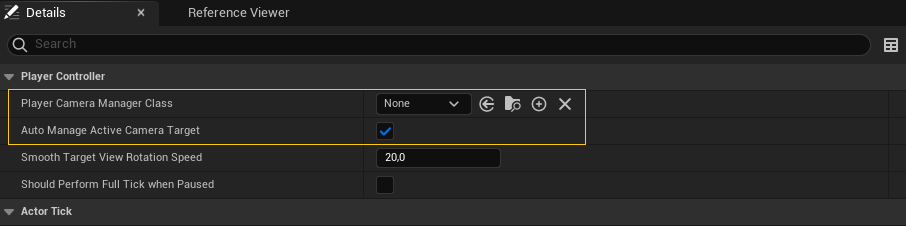
En cada tick el PlayerController llama al método UpdateCamera() de su PlayerCameraManager para que actualice las propiedades con el POV deseado más reciente. El motor accede a estas propiedades a través del LocalPlayer, que utiliza al PlayerController y al PlayerCámeraManager para recopilar la información.
Actor view target
Sobreescribiendo UpdateCamera() en PlayerCameraManager se pueden establecer las propiedades del punto de vista de la cámara del jugador que usará el motor para el render. Sin embargo, la implementación por defecto que ofrece Unreal Engine en el PlayerCameraManager es bastante flexible, permitiendo ajustar el POV sobreescribiendo varios métodos.
La implementación del PlayerCameraManager se basa en el concepto de view target, que es el actor que va a determinar el punto de vista del jugador. Este actor se puede obtener y cambiar manualmente en el PlayerController, mediante los métodos {{< api GetViewTarget >}}, {{< api SetViewTarget >}} y {{< api SetViewTargetWithBlend >}} (ver la Figure 21), aunque realmente esta configuración se almacena en el PlayerCameraManager.
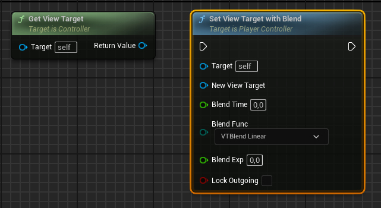
Además, la asignación del view target puede ocurrir automáticamente, activando la opción Auto Manage Active Camera Target del PlayerController (ver la Figure 20). En ese caso el PlayerController:
- Busca un actor CameraActor con la opción Auto Activate for Player configurada con el jugador del PlayerController (ver la propiedad en la Figure 22). Si lo encuentra, asigna ese actor {{< api CameraActor >}} como view target.
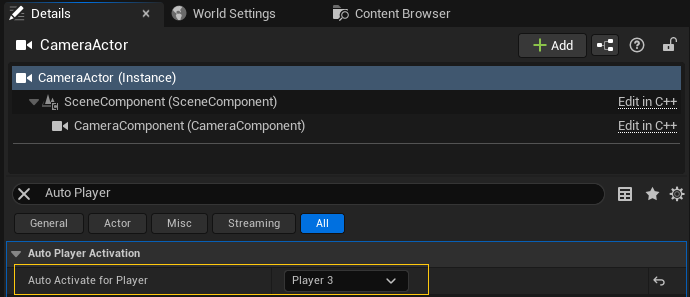
En otro caso, utiliza el Pawn poseído en cada momento por el PlayerController.
Si el PlayerController no posee a ningún Pawn, se usa el propio actor PlayerController como view target.
Qué actor es el view target es importante porque durante la ejecución de UpdateCamera() se invoca el método {{< api CalcCamera >}} del view target. Mediante este método el actor devuelve el POV deseado para el jugador.
Tip
Este sistema no solo ofrece mucha flexibilidad para gestionar múltiples cámaras de gameplay. También se puede explotar para desarrollar un sistema de cámaras de depuración, que permita cambiar el punto de vista y la configuración en tiempo real, para visualizar el nivel desde diferentes puntos de vista y encontrar y resolver problemas.
El comportamiento por defecto de CalcCamera() en cualquier actor es buscar su primer componente CameraComponent y devolver su localización, rotación y otras propiedades como el punto de vista del jugador.
Es decir, en Unreal Engine, el componente CameraComponent es realmente una especie de objeto marcador que facilita configurar las propiedades de las cámaras directamente en la escena. En realidad no tienen conexión directa con la cámara del sistema de render, ni son necesarios para ubicar y configurar adecuadamente las cámaras.
Si un el actor view target no tiene un CameraComponent, el método CalcCamera() retorna la ubicación y rotación del actor como POV del jugador.
Transiciones entre view targets
La arquitectura comentada facilita cambiar entre diferentes modos de cámara, si el juego lo requiere.
Por ejemplo, en un juego de acción en tercera persona, el jugador puede controlar a un personaje que se mueve libremente por el nivel, utilizando una cámara que orbita libremente alrededor del personaje. Pero cuando el jugador entra en un vehículo, el view target puede cambiar al vehículo, haciendo que se use una cámara externa que facilite la condución. Igualmente, cuando el personaje se acerca a una zona de escalada, el view target se puede cambiar a un actor con una cámara que se mueve en un plano paralelo a la pared, a una distancia mayor, para que el jugador pueda ver mejor lo que está haciendo. O en una arena de combate, el view target puede cambiar a un actor con una cámara externa que orbite en alto sobre la zona, facilitando al jugador tener una vista de la acción.
Al cambiar el view target en el PlayerController mediante el método SetViewTarget(), la transición entre ambos POV es instantánea. Sin embargo, si se usa el método {{< api SetViewTargetWithBlend >}}, se puede configurar un tipo de transición, haciendo que el PlayerCameraManager interpole las propiedades de la cámara entre el POV del view target anterior y el nuevo (ver la Figure 21).
Por ejemplo, en el caso de la escalada, se puede usar una transición de tipo ease out, para que la cámara se aleje del personaje de forma suave, y otra de tipo ease in, para que la cámara se acerque al personaje de forma suave cuando termina la escalada.
Personalizar el comportamiento de la cámara
En la arquitectura descrita existen diferentes puntos donde se puede personalizar el comportamiento de la cámara.
CalcCamera() en el view target
Sobreescribir el método {{< api CalcCamera >}} en el actor –solo en C++– es ideal para hacer cambios del control de cámara específicos de ese actor. Por ejemplo, un Pawn puede tener varios CameraComponent para indicar diferentes posibles posiciones de la cámara, como primera o tercera persona, cámara al hombro en el lado derecho o izquierdo, cámara con mira, etc.
En CalcCamera() se puede implementar la lógica para elegir el CameraComponent adecuado, según las preferencias del jugador o el estado del personaje. CalcCamera() es, probablemente, el primer lugar donde mirar si queremos ajustar el comportamiento de la cámara.
Parece hacer cambios más globales, es necesario ir al PlayerCameraManager y sobreescribir alguno de sus métodos.
BlueprintUpdateCamera() y UpdateViewTargetInternal()
Se puede sobreescribir BlueprintUpdateCamera() en Blueprint para hacer cambios que afecten a todos los view target.
En PlayerCameraManager, durante el UpdateCamera(), se llama a UpdateViewTargetInternal() indicándole el view target en los argumentos. Este es el método que llama al CalcCamera() de dicho view target y, posteriormente, pasa el POV devuelto por ese método a BlueprintUpdateCamera(), para que pueda modificarlo en un Blueprint. Si BlueprintUpdateCamera() devuelve true, sus cambios tienen prioridad sobre los devuelto por CalcCamera().
Para hacer este tipo de cambios globales, pero en C++, se puede sobreescribir UpdateViewTargetInternal(). Tanto UpdateViewTargetInternal() como BlueprintUpdateCamera() son ideales para cambios que solo requieran sobreescribir el POV devuelto por el método CalcCamera() del view target indicado, sin afectar al resto de maneras de obtener el POV del jugador.
UpdateViewTarget()
El método UpdateViewTargetInternal() es llamado por UpdateViewTarget().
En el método UpdateViewTarget() recibe el view target y para obtener el POV sigue los siguientes pasos:
Si el view target indicado es un actor CameraActor, obtiene el POV directamente del CameraActor.
En caso contrario, comprueba si se ha activado un estilo de cámara válido en la variable miembro
CameraStyle–solo en C++– del PlayerCameraManager. Si así fuera, calcula directamente el POV del jugador según el estilo indicado1.
En otro caso, llama a
UpdateViewTargetInternal()que, a su vez, llama alCalcCamera()del view target. Luego llamaBlueprintUpdateCamera(), para que pueda modificar el POV devuelto por dicho actor.Finamente, aplica los modificadores de cámara al POV obtenido en alguno de los pasos anteriores (ver la Section 1.8.4) y retorna el POV resultante a
DoUpdateCamera()del PlayerCameraManager.
Por tanto, se puede sobreescribir UpdateViewTarget() para hacer cambios que afecten a todas las formas de calcular el POV deseado o para crear nuevos estilos de cámara, si preferimos implementar el control de la cámara directamente de esta última manera.
DoUpdateCamera() y UpdateCamera()
Finalmente, UpdateViewTarget() es llamado por DoUpdateCamera() que, a su vez, es llamado por UpdateCamera() desde el tick del PlayerController.
DoUpdateCamera implementa el mecanismo de transición de view target, interpolando entre dos POV al indicar un nuevo view target mediante SetViewTargetWithBlend().
Como hemos comentado, DoUpdateCamera() llama UpdateViewTarget() con indicándole el view target actual para obtener el POV deseado. Si está en mitad de una transición entre dos view target, hace la llamada a UpdateViewTarget() dos veces, una para el view target previo y otra para el nuevo. Después interpola entre los POV devueltos por ambas llamadas, para obtener el POV definitivo en el frame actual.
Por tanto, se puede sobreescribir DoUpdateCamera() para hacer cambios en la manera en la que se interpola entre los POV al cambiar el view target. O para modificar completamente el control del cámara.
Al finalizar, DoUpdateCamera() almacena el POV resultante en PlayerCameraManager para su uso durante el render. También actualiza el fundido de cámara y de audio, si está activo –ver {{< api StartCameraFade >}}, {{< api StopCameraFade >}} y {{< api SetManualCameraFade >}} de PlayerCameraManager en la Figure 23– y aplica otros efectos.
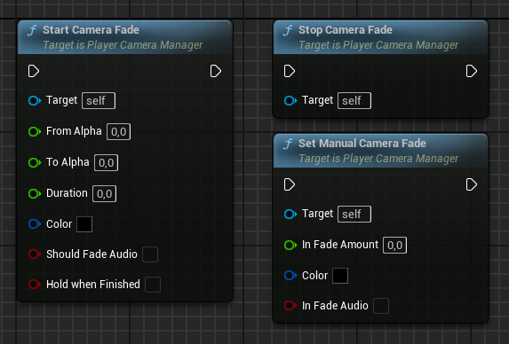
En la Figure 24 se puede ver un esquema de la cadena de responsabilidad que se sigue para obtener el POV del jugador para el render.
Modificadores de cámara
El PlayerCameraManager soporta modificadores de cámara que pueden añadir y eliminar mediante los métodos AddNewCameraModifier() y RemoveCameraModifier(), respectivamente (ver la Figure 25) o en las propiedades de la clase en el editor.
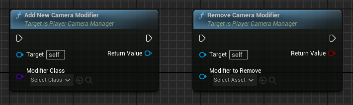
Estos modificadores puede afectar a:
La ubicación, rotación y otras propiedades de cámara del POV del jugador.
La rotación de control del jugador. Por ejemplo, para establrcer límites.
Modificar la configuración de los efectos de posprocesado.
Los modificadores se aplican al final del método UpdateViewTarget(), durante el cálculo del POV del jugador.
Activación y desactivación de modificadores
Una vez se ha añadido un modificador, se puede activar y desactivar, según el estado del juego, a través de los métodos EnableModifier(), DisableModifier() y ToggleModifier(), de la clase {{< api CameraModifier >}}, que se pueden ver en la Figure 26.
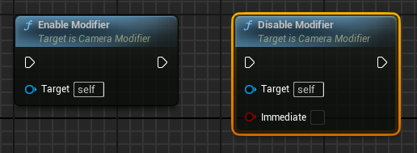
Por ejemplo, se puede añadir un modificador UCameraModifier_CameraShake para sacudir la cámara cuando el jugador recibe daño, activándolo y desactivándolo durante un tiempo cuando se da el caso.
Además, la activación y desactivación puede ser instantánea o gradual, según el valor de las propiedades AlphaInTime, AlphaOutTime de CameraModifier y el argumento Immediate de DisableModifier().
Prioridad de los modificadores
Los modificadores se organizan en el PlayerCameraManager en una lista ordenada por su prioridad, que es una propiedad de la instancia de CamaraModifier. De forma que se pueden aplicar varios modificadores a la vez, en un orden determinado por su prioridad.
Aunque los efectos de los modificadores generalmente se combinan, es posible que un modificador de alta prioridad prevenga la ejecución de modificadores de menor prioridad. Esto se puede indicar mediante el valor de retorno del método {{< api ModifyCamera >}} de CameraModifier, que si true detendría la ejecución de los siguientes modificadores.
Modificadores de cámara predefinidos
Algunos de los modificadores de cámara predefinidos de Unreal Engine son:
{{< api CameraShakeBase >}}. Sacude la cámara para crear sensación de impacto o agitación, lo que es útil con explosiones o al recibir daño.
El efecto se configura añadiendo al modificador uno o varios objetos de tipo {{< api CameraShakeBase >}}. Cada uno contiene un patrón de movimiento que es el objeto que realmente contiene la lógica que dirige el movimiento de la cámara[@UnrealCameraShakes].
{{< api UCameraAnimationCameraModifier >}}. Aplica una secuencia de animación a la cámara.
Modificadores personalizados
La clase base de los modificadores es {{< api CameraModifier >}} y se puede heredar de ella para implementar modificadores de cámara personalizados.
Los métodos BlueprintModifyCamera() y {{< api ModifyCamera >}} son los que se deben sobreescribir para implementar la lógica de los modificadores de las propiedades de la cámara, en Blueprint o C++, respectivamente. Mientras que BlueprintModifyPostProcess() y {{< api ModifyPostProcess >}} se pueden sobreescribir para modificar la configuración de los efectos de posprocesado.
En todo los casos, es responsabilidad del código de estas funciones interpretar y aplicar los valores de Alpha, si el efecto debe mezclarse de forma gradual al activarse o desactivarse.
En realidad, PlayerCameraManager llama al método {{< api ModifyCamera >}} de cada modificador, pasándole la delta de tiempo y una estructura con la información del POV del jugador para que la modifique. Este método actualiza el Alpha, llama a los métodos anteriores y, por defecto, retorna false para que se puedan ejecutar los siguientes modificadores de menor prioridad.
Relación con la rotación de control
La rotación de control del PlayerController se puede ver afectada por los modificadores de la cámara y el PlayerCameraManager.
En cada tick el PlayerController llama a su método UpdateRotation() para actualizar la rotación de control con la entrada del jugador acumulada hasta el momento en una variable interna. Este método llama a ProcessViewRotation() del PlayerCameraManager que, a su vez, llama al mismo método en cada modificador de cámara, pasando por referencia tanto la rotación de control actual como la indicada por la entrada del jugador.
Gracias a esto, los modificadores de la cámara pueden modificar tanto rotación de control actual como la entrada del jugador acumulada, que se usará para actualizar la rotación de control. Esto sirve, por ejemplo, para que un modificador de cámara activo pueda limitar la rotación de control a cierto intervalo.
En todo caso, para establecer limitaciones a la rotación de control del jugador de forma generalizada, se pueden usar las propiedades View Pitch Min, View Pitch Max, View Yaw Min, View Yaw Max, View Roll Min y View Roll Max que trae de serie PlayerCameraManager, como se puede ver en la Figure 27.
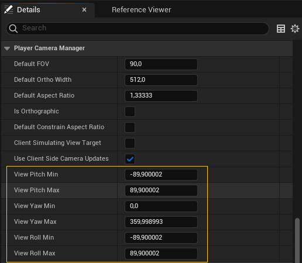
Gameplay Framework
En la Figure 28 se puede observar un esquema del gameplay framework de Unreal Engine que hemos comentado en apartados anteriores.
classDiagram
Actor <|-- GameMode
Actor <|-- GameState
Actor <|-- PlayerState
Actor <|-- Controller
Actor <|-- Pawn
GameMode --> GameState
GameState "1" --> "*" PlayerState
PlayerController --> PlayerCameraManager
PlayerController --> PlayerInput
PlayerController --> HUD
GameMode --> PlayerController : crea
PlayerController "1" --> "1" PlayerState
Controller <|-- PlayerController
Controller <|-- AIController
PlayerController --> Pawn : posee
AIController --> Pawn : posee
Pawn <|-- Character
Pawn <|-- DefaultPawn
Pawn <|-- SpectatorPawn
ActorComponent <|-- MovementComponent
MovementComponent <|-- CharacterMovementComponent
Character *-- CharacterMovementComponent
Esta arquitectura se puede trasladar fácilmente a otros motores, con las modificaciones que mejor se adapten a nuestras necesidades y a las particularidades de cada motor.
Footnotes
UpdateViewTarget()incluye implementaciones de ejemplo para unos pocos estilos: Fixed, ThirdPerson, FirstPerson, FreeCam y FreeCam_Default. Obviamente, se puede sobreescribir el método para hacer implementaciones propias o añadir nuevos estilos, pero esta no es la forma más común de implementar el control de cámara, en la actualidad.↩︎